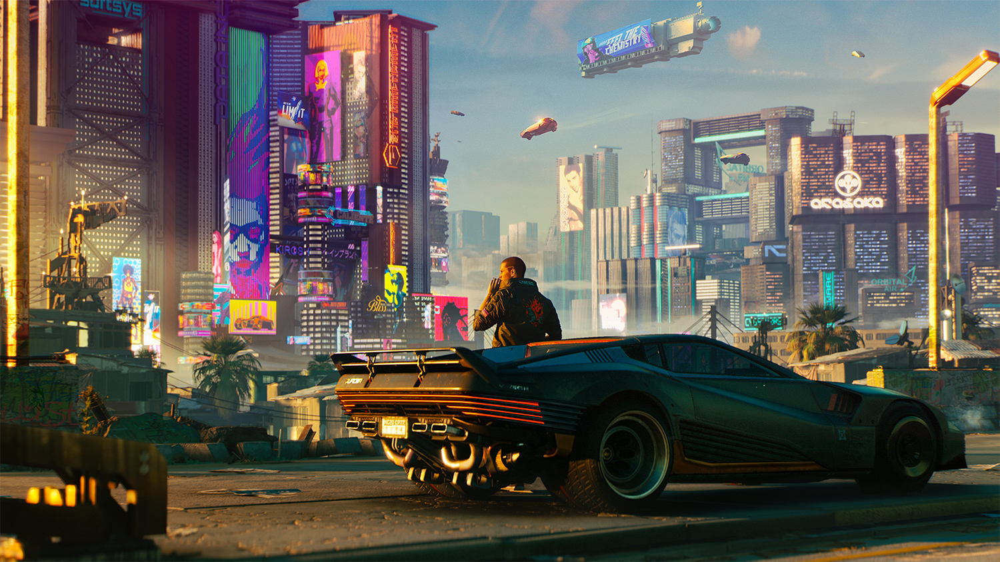

Обзор игры
Cyberpunk — это игра в жанре RPG, разработанная CD Projekt Red, действие которой происходит в мрачном будущем.
Сюжет игры
Вы играете за V, наемника, который ищет возможность стать легендой Найт-Сити.
Персонажи
- V - главный герой.
- Джонни Сильверхэнд - культовый персонаж.
- Декстер Дэшоун - влиятельный босс наемников.